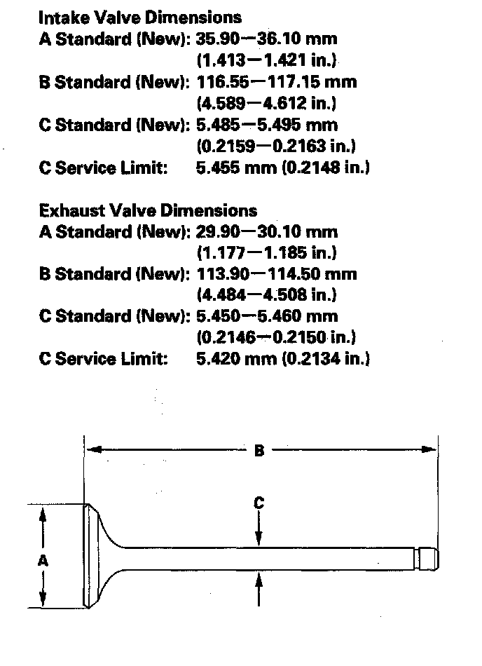

Operation CHARM
: Car repair manuals for everyone.
Home
>>
Acura
>>
2007
>>
MDX V6-3.7L
>>
Repair and Diagnosis
>>
Engine, Cooling and Exhaust
>>
Engine
>>
Cylinder Head Assembly
>>
Valve
>>
Testing and Inspection
Valve: Testing and Inspection
Valve Inspection
1.
Remove the valves.
2.
Measure the valve in these areas.
